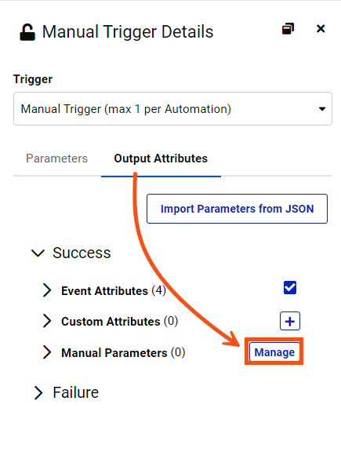

After completing this lesson, you’ll be able to:
Automation Apps allow authorized users to trigger Automations via a web app.
When you create an Automation App, FME Flow will generate a valid token that includes the necessary permissions to use and run the app. The app is shared as a URL and presented through a customizable web page.
The ability to publish Automations as FME Flow Apps enables users to run complex workflows on demand with configurable input parameters. With Automation Apps, you can now trigger more advanced, multi-workspace, and multi-action workflows. This will benefit end-users and allow complex workflows to be created, shared, and leveraged across organizations.
You can create an Automation App by clicking the New button on either the Create Automation App page or the Manage Automation Apps page. You can find both pages under Flow Apps on the side menu panel. Please note that Automation Apps can only be created if the automation trigger uses a manual trigger. Select Create Automation Apps from the drop-down menu:
You will see an error message on the Create Automation App page if you do not have any Manual Trigger Automations.
You will need to configure a few parameters when building your Automation App:
Name: Provide a name for the app. The name appears on the run page for the app and will also become part of the URL for the run page. App names are case-insensitive. The name will appear as <Name> Automation App on the run page.
Title (optional): The title will be displayed at the top of the app in the browser tab
Description (optional): Provide a description or additional information for the app. The text body will be located below the name on the run page.
Automation: Select an Automation with Manual Trigger. Ensure the Automation is started.
Expiration: FME Flow creates a token to authenticate the Automation App. The token automatically has the necessary permissions required for the user to run the application. You can set the expiration date for the security token of the app. After the token expires, the Automation App will no longer run. The default expiration is ten years from the current date.
Allowed Users: All Automation Apps require the creator to specify which users are allowed access to run the application. When users go to the FME Flow Automation App URL, they must log in to FME Flow first before seeing the run app page. Access to the app is restricted to authorized FME Flow Users who belong to the specified Roles.

Automation Apps enable complex workflows to be run on demand with configurable input parameters. The manual trigger in Automations can be configured to prompt you with a list of parameters generated from the existing ones. These parameters will appear on the Automation Apps page. To create manual parameters, you will need to go to Automations > Manual Trigger > Output Attributes> Success > Manual Parameters > Manage.

Once you select Manage, the Manual Parameters Editor will appear. The left panel shows all your created parameters, and options to add new ones, reorder, or delete parameters. The right panel shows parameter definitions where you configure the parameter settings.
Like Workspace apps, Automation Apps allow for the flexibility of customizing the appearance of your application. Your Automation App can be tailored to your organization’s colors, logo, and images. At the bottom of the Customize section, you also have the option to Run Immediately. This is to specify the app to run as soon as its URL is invoked without displaying a run page. The parameters below used to customize the application run page are all optional. The Icon, Logo, and Banner parameters only support JPEG and PNG file formats.
Browser Icon (optional): The icon will be visible in the browser tab. There is a 300 KB file size limit for icon images.
Heading Background Color (optional): Configure the banner's background color at the top of the app page. It appears behind the Heading Banner if transparent.
Heading Logo (Optional): This will appear above the Heading Banner and/or Heading Background Color. There is a 1 MB file size limit for the image.
Heading Banner (optional): This image will appear at the top of the app page. If transparent, it appears over Heading Background Color. There is a 1 MB file size limit for the image.
Footer Text (optional): The text appears below the links on the app page.
Footer Logo (optional): This appears beneath the Footer Text and behind the Footer Banner if transparent. There is a 1 MB file size limit for the image.
Footer Banner (optional): An image to comprise the banner at the bottom of the app page. If transparent, it appears over Footer Logo. There is a 1 MB file size limit for the image.
Run Immediately: Option to configure the Automation App to run immediately once the URL is invoked without displaying a run page.

After configuring your Automation App settings and clicking OK, you're presented with the App URL which you can copy to share or click to open the app.
Here is an example of an Automation App with and without a customized run page:
By default, all apps are enabled to run when created. To disable or enable an app, select an app, then select Actions > Disable or Enable from the Manage Automation Apps page.
Like Workspace Apps, you can view or copy the URL from the main Flow Apps > Manage Automation Apps page. You can also change the expiration date of an app by selecting the app and choosing Change Expiration from the Actions dropdown menu.

Another option to manage the expiration of an Automation App is via the Token Management page. This is because the expiration is managed by the token that authorizes the app's usage. To access the Token Management page, click Manage Tokens from the User Settings dropdown (top right of the FME Flow Web Interface). You should see the token created for your app on the Token Management page. Click it to edit its parameters. You can edit the token description on the page, enable or disable the token (disabling the token will disable your app), and change the expiration date.
Parameters enable the Automation author to pass data values from one Automation component to the next. When an Automation is created into an Automation App, three new parameters are added to the Automation:
Once the app is created, any Action downstream from the Manual Trigger can use Automation App parameters. Automation App parameters are accessible from an Action in the Details pane, or from within a parameters Text Editor.